¶ Задание
7. На сервере HQ-SRV реализуйте мониторинг устройств с помощью открытого программного обеспечения
- Обеспечьте доступность по URL - http://mon.au-team.irpo для сетей офиса HQ, внесите изменения в инфраструктуру разрешения доменных имён
- Мониторить нужно устройства HQ-SRV и BR-SRV
- В мониторинге должны визуально отображаться нагрузка на ЦП, объем занятой ОП и основного накопителя
- Логин и пароль для службы мониторинга admin P@ssw0rd
- Организуйте доступ к мониторингу для HQ-CLI, без внешнего доступа
- Выбор программного обеспечения, основание выбора и основные параметры с указанием порта, на котором работает мониторинг, отметьте в отчёте
¶ Реализация
¶ Установка Prometheus на HQ-SRV
Виртуальная машина HQ-SRV
Устанавливаем prometheus
Запускаем prometheus и добавляем его в автозагрузку
Проверяем работу Prometheus введя в браузере на HQ-CLI IP адрес HQ-SRV и порт 9090
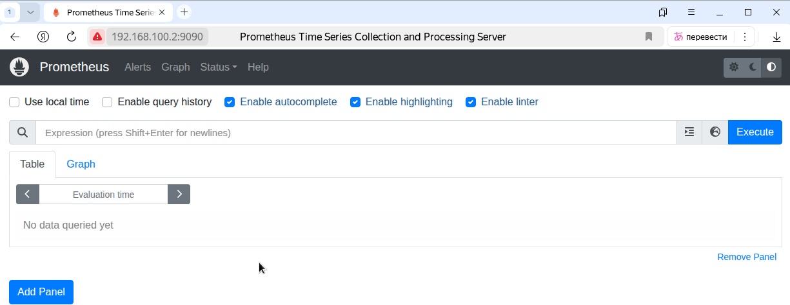
Можно проверить, что сбор данных для сервиса prometheus работает. Меню Status -> Targets. Должна отображаться одна цель prometheus
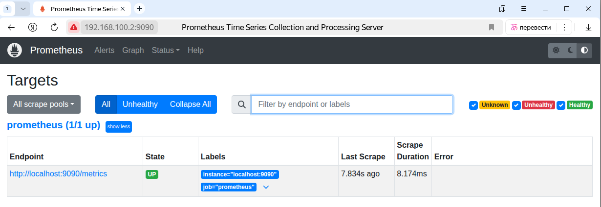
¶ Установка и настройка Node Exporter на HQ-SRV и BR-SRV
Виртуальная машина HQ-SRV
Используем однин из самых популярных экспортеров —
Node Exporter, который собирает множество системных метрик (процессор, память и т.д.) для оценки состояния сервера и его нагрузки.Node Exporter доступен в репозитории РЕД ОС
Создаем пользователя nodeusr
Устанавливаем экспортер
Запускаем node_exporter и добавляем его в автозагрузку
Добавление node_exporter в
prometheus
На HQ-SRV открываем конфигурационный файл prometheus
Дополняем секцию scrape_configs следующими строками
где
192.168.100.2 - ip адресс HQ-SRV
Перезапускаем prometheus
Виртуальная машина BR-SRV
Создаем пользователя nodeusr
Устанавливаем экспортер
Запускаем node_exporter и добавляем его в автозагрузку
Добавление node_exporter в
prometheus
На HQ-SRV открываем конфигурационный файл prometheus
Дополняем секцию scrape_configs следующими строками
где
192.168.20.2 - ip адресс BR-SRV
Перезапускаем prometheus
Получаем
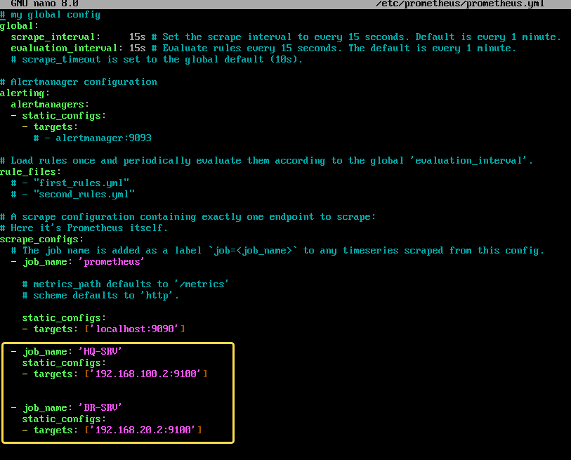
¶ Проверка
Проверяем что в Prometheus данные передаются
На HQ-CLI в браузере вводим IP HQ-SRV и порт 9090
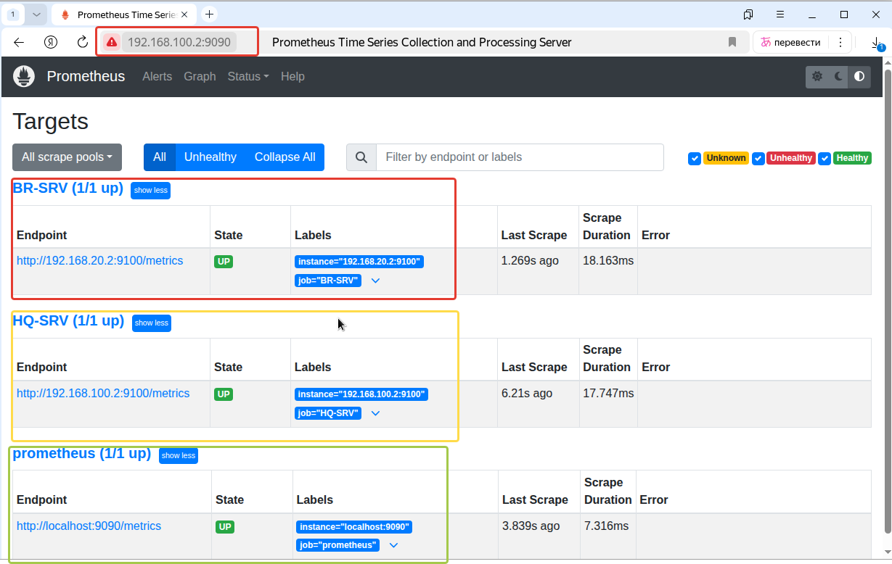
¶ Установка и настройка Grafana
Виртуальная машина HQ-SRV
Установка Grafana
Запускаем grafana-server и добавляем его в автозагрузку
¶ Настройка Grafana
Веб-интерфейс
Grafanaдоступен по адресуhttp://<IP-адрес_HQ-SRV>:3000
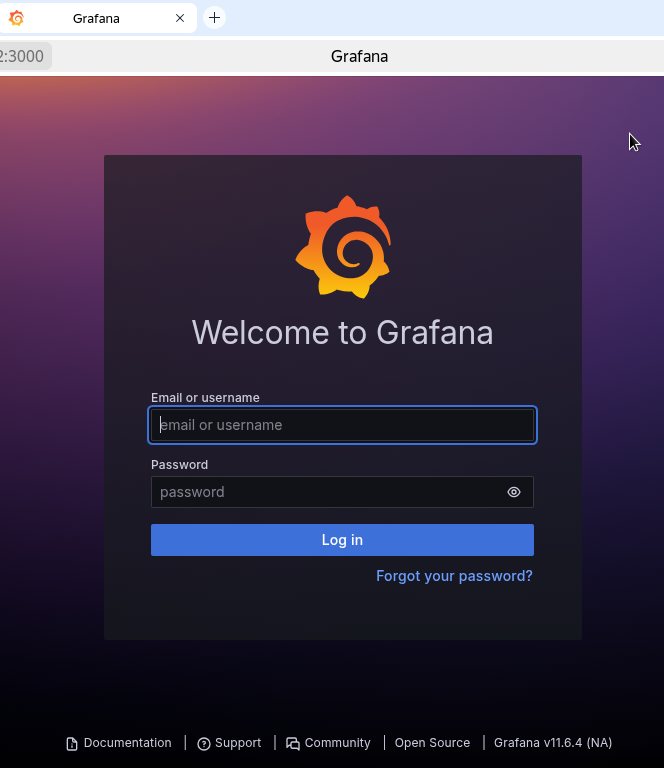
Логин и пароль для первого входа: admin/admin. При первом входе будет запрошена смена пароля – меняем согласно заданию на admin / P@ssw0rd
Добавляем источник данных для Grafana,
Home –> Connections –> Data Sources –> Add data source
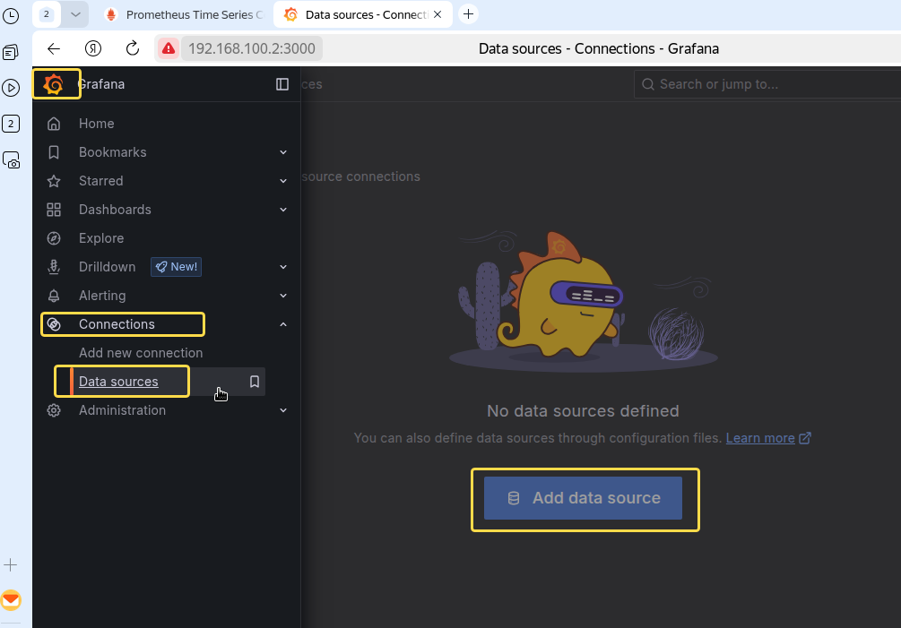
Выбираем
Prometheus
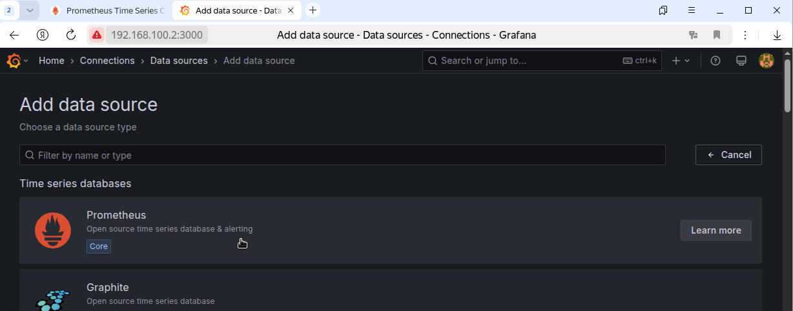
В настройках указываем
IP-адрес и портсервера с Prometheus (HQ-SRV), остальные настройки оставляем по умолчанию (остальные по желанию)
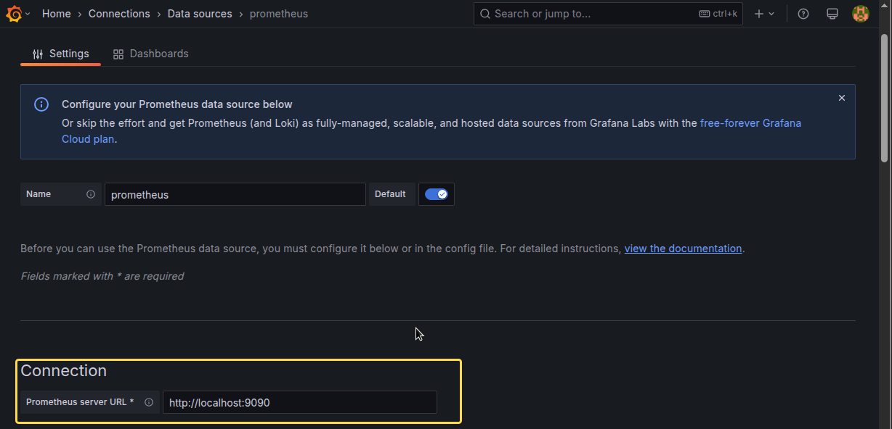
Так как Grafana и Prometheus находится на HQ-SRV можно использовать localhost, а порт по умолчанию 9090
Для сохранения настроек в низу страницы жмем
Save & Test
¶ Загрузка дашбордов
Загрузка дашбордов
Наиболее универсальным является
id=1860, его можно скачать по ссылке (используем ревизию 27 и ниже)
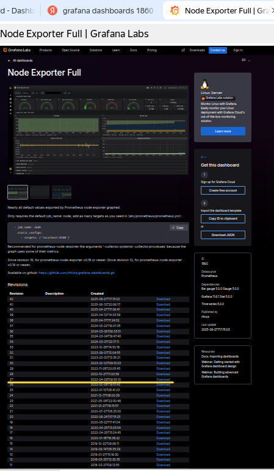
Для импорта дашборда выбираем
Home - Dashboards
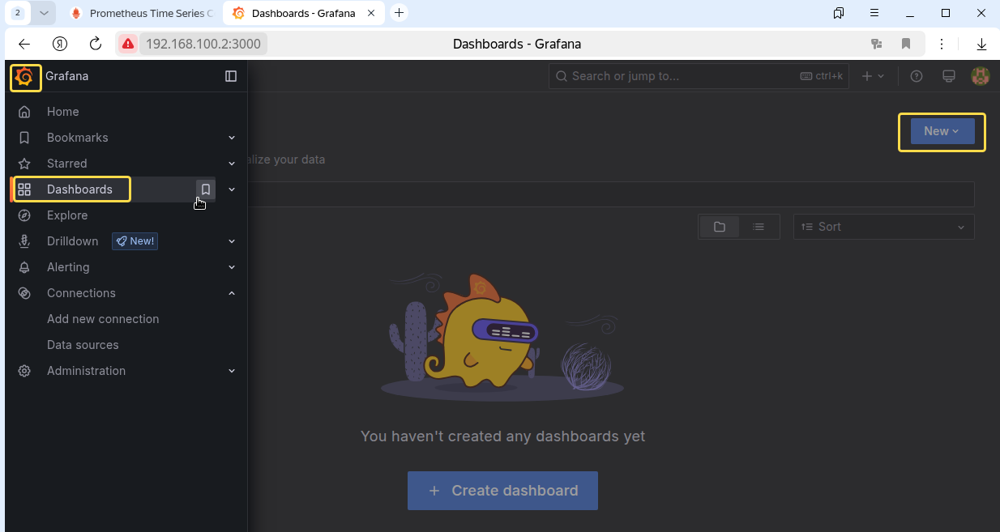
Жмем
New - Import
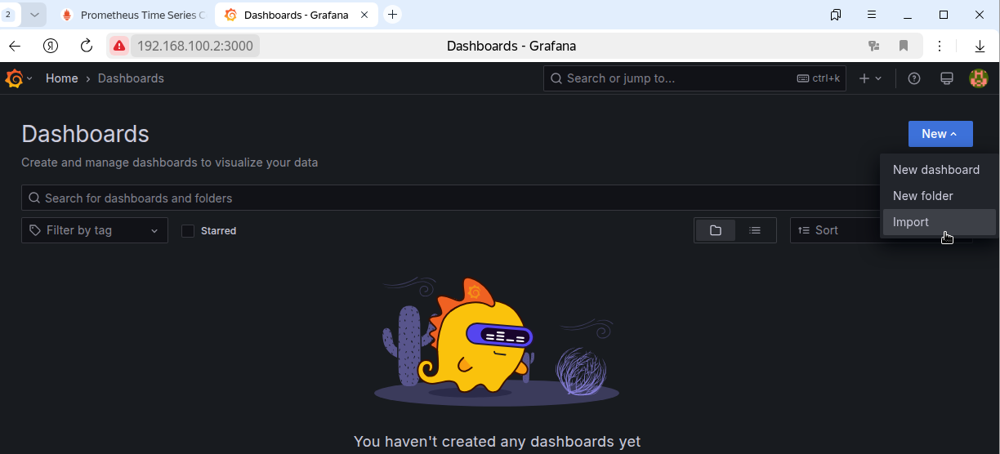
Нажимаем
Upload dashboard JSON file, выбираем скачанный раннееJSON-файл
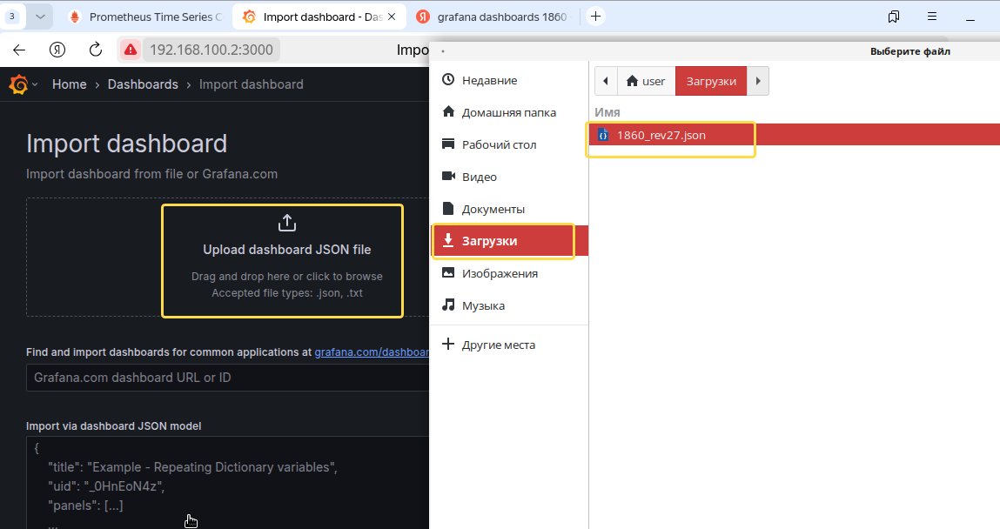
В появившемся окне
OptionsвыбратьPrometheusи нажатьImport
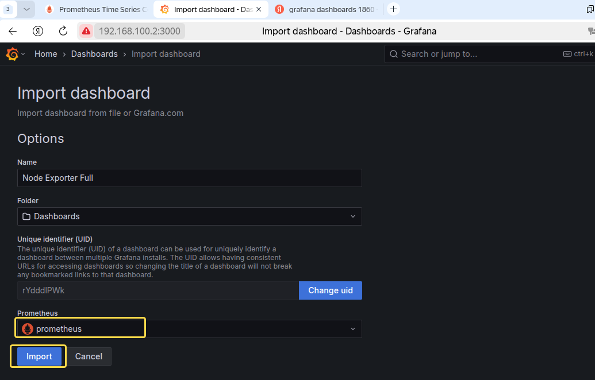
Откроется загруженный дашборд 1860
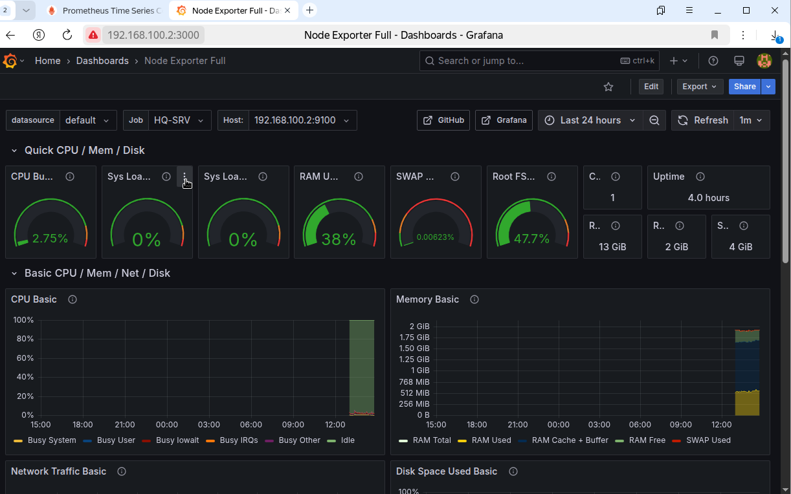
¶ Доступность по URL
Виртуальная машина HQ-CLI
Вариант -1
В домене SambaDC на HQ-SRV нет в DNS записи mon.au-team.irpo. Внесем дополнительные записи в /etc/hosts на HQ-CLI
Открываем файл hosts на HQ-CLI
Добавляем запись
Вариант -2
Открываем на редактирование файл зоны au-team.db DNS сервера на HQ-SRV
И добавляес запись
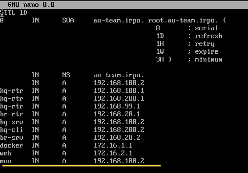
Выполняем перезагрузку файла конфигурации зон службы named
Перезагружаем named
В браузере на HQ-CLI вводим http://mon.au-team.irpo:3000 и попадаем на систему мониторинга Prometheus с системой визуализации данных Grafana
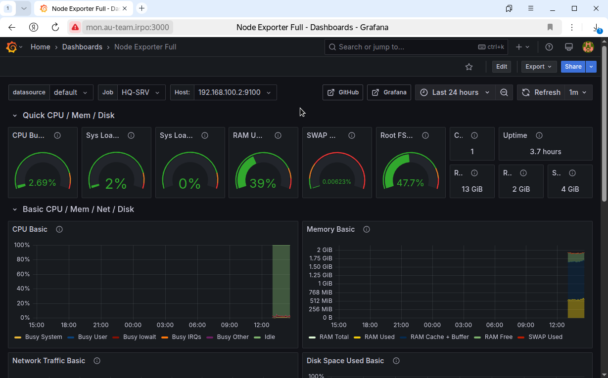
В выпадающем списке Job можно выбрать сервер для визуализации
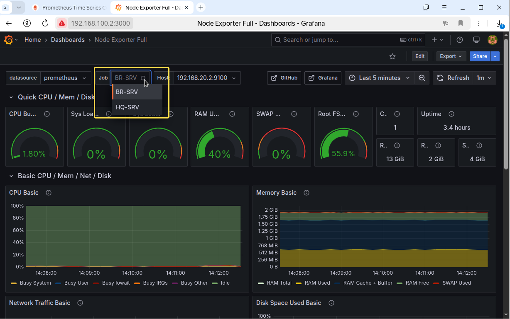